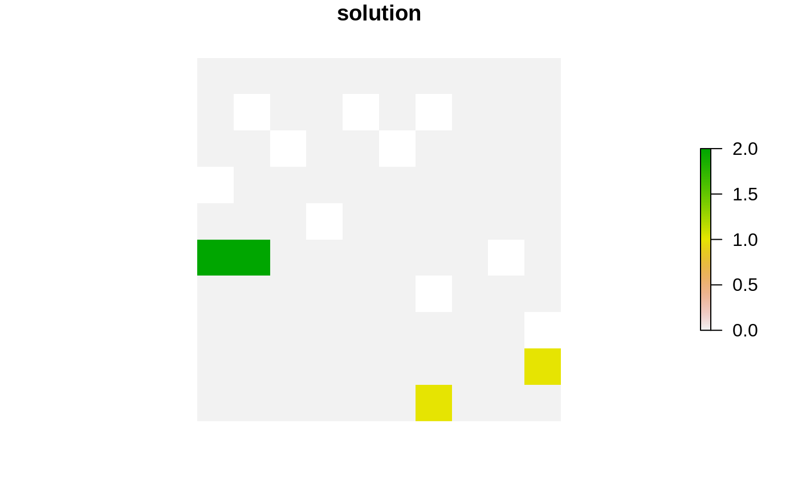
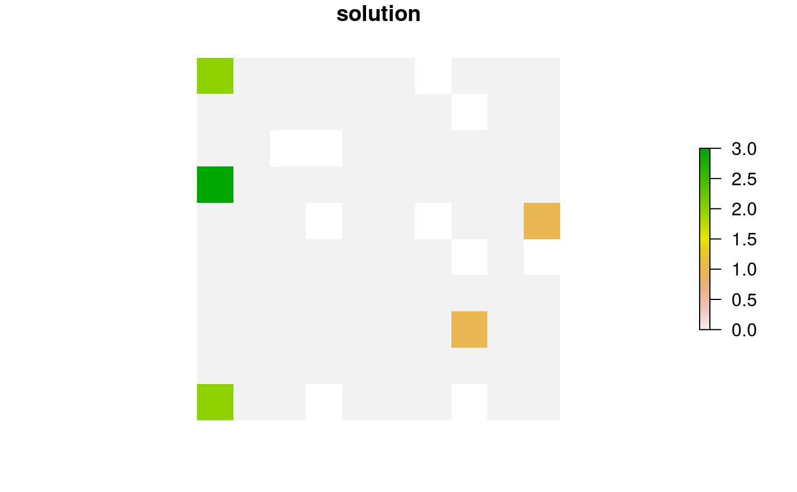

Set the objective of a conservation planning problem to
represent at least one instance of as many features as possible within a
given budget. This type of objective does not use targets, and feature
weights should be used instead to increase the representation of different
features in solutions. Note that the mathematical formulation
underpinning this function is different from versions prior to 3.0.0.0.
See the Details section for more information on the changes since this
version.
add_max_cover_objective(x, budget)
| x |
|
|---|---|
| budget |
|
ConservationProblem-class object with the objective
added to it.
A problem objective is used to specify the overall goal of the conservation planning problem. Please note that all conservation planning problems formulated in the prioritizr package require the addition of objectives---failing to do so will return an error message when attempting to solve problem.
The maximum coverage objective seeks to find the set of planning units that
maximizes the number of represented features, while keeping cost within a
fixed budget. Here, features are treated as being represented if
the reserve system contains at least a single instance of a feature
(i.e. an amount greater than 1). This formulation has often been
used in conservation planning problems dealing with binary biodiversity
data that indicate the presence/absence of suitable habitat
(e.g. Church & Velle 1974). Additionally, weights can be used to favor the
representation of certain features over other features (see
add_feature_weights). Check out the
add_max_features_objective for a more
generalized formulation which can accommodate user-specified representation
targets.
This formulation is based on the historical maximum coverage reserve selection formulation (Church & Velle 1974; Church et al. 1996). The maximum coverage objective for the reserve design problem can be expressed mathematically for a set of planning units (\(I\) indexed by \(i\)) and a set of features (\(J\) indexed by \(j\)) as:
$$\mathit{Maximize} \space \sum_{i = 1}^{I} -s \space c_i \space x_i + \sum_{j = 1}^{J} y_j w_j \\ \mathit{subject \space to} \\ \sum_{i = 1}^{I} x_i r_{ij} \geq y_j \times 1 \forall j \in J \\ \sum_{i = 1}^{I} x_i c_i \leq B$$
Here, \(x_i\) is the decisions variable (e.g.
specifying whether planning unit \(i\) has been selected (1) or not
(0)), \(r_{ij}\) is the amount of feature \(j\) in planning
unit \(i\), \(y_j\) indicates if the solution has meet
the target \(t_j\) for feature \(j\), and \(w_j\) is the
weight for feature \(j\) (defaults to 1 for all features; see
add_feature_weights to specify weights). Additionally,
\(B\) is the budget allocated for the solution, \(c_i\) is the
cost of planning unit \(i\), and \(s\) is a scaling factor used
to shrink the costs so that the problem will return a cheapest solution
when there are multiple solutions that represent the same amount of all
features within the budget.
Note that this formulation is functionally equivalent to the
add_max_features_objective function with absolute targets
set to 1. Please note that in versions prior to 3.0.0.0, this objective
function implemented a different mathematical formulation. To
the add_max_utility_objective function.
Church RL and Velle CR (1974) The maximum covering location problem. Regional Science, 32: 101--118.
Church RL, Stoms DM, and Davis FW (1996) Reserve selection as a maximum covering location problem. Biological Conservation, 76: 105--112.
# load data data(sim_pu_raster, sim_pu_zones_stack, sim_features, sim_features_zones) # threshold the feature data to generate binary biodiversity data sim_binary_features <- sim_features thresholds <- raster::quantile(sim_features, probs = 0.95, names = FALSE, na.rm = TRUE) for (i in seq_len(raster::nlayers(sim_features))) sim_binary_features[[i]] <- as.numeric(raster::values(sim_features[[i]]) > thresholds[[i]]) # create problem with maximum utility objective p1 <- problem(sim_pu_raster, sim_binary_features) %>% add_max_cover_objective(500) %>% add_binary_decisions()#> Optimize a model with 6 rows, 95 columns and 120 nonzeros #> Variable types: 0 continuous, 95 integer (95 binary) #> Coefficient statistics: #> Matrix range [1e+00, 2e+02] #> Objective range [1e-04, 1e+00] #> Bounds range [1e+00, 1e+00] #> RHS range [5e+02, 5e+02] #> Found heuristic solution: objective -0.0000000 #> Presolve removed 5 rows and 90 columns #> Presolve time: 0.00s #> Presolved: 1 rows, 5 columns, 5 nonzeros #> Variable types: 0 continuous, 5 integer (5 binary) #> Presolved: 1 rows, 5 columns, 5 nonzeros #> #> #> Root relaxation: objective 1.999790e+00, 1 iterations, 0.00 seconds #> #> Nodes | Current Node | Objective Bounds | Work #> Expl Unexpl | Obj Depth IntInf | Incumbent BestBd Gap | It/Node Time #> #> * 0 0 0 1.9997896 1.99979 0.00% - 0s #> #> Explored 0 nodes (1 simplex iterations) in 0.00 seconds #> Thread count was 1 (of 4 available processors) #> #> Solution count 2: 1.99979 -0 #> #> Optimal solution found (tolerance 1.00e-01) #> Best objective 1.999789559459e+00, best bound 1.999789559459e+00, gap 0.0000%# threshold the multi-zone feature data to generate binary biodiversity data sim_binary_features_zones <- sim_features_zones for (z in number_of_zones(sim_features_zones)) { thresholds <- raster::quantile(sim_features_zones[[z]], probs = 0.95, names = FALSE, na.rm = TRUE) for (i in seq_len(number_of_features(sim_features_zones))) { sim_binary_features_zones[[z]][[i]] <- as.numeric( raster::values(sim_features_zones[[z]][[i]]) > thresholds[[i]]) } } # create multi-zone problem with maximum utility objective that # has a single budget for all zones p2 <- problem(sim_pu_zones_stack, sim_binary_features_zones) %>% add_max_cover_objective(800) %>% add_binary_decisions()#> Optimize a model with 106 rows, 285 columns and 1478 nonzeros #> Variable types: 0 continuous, 285 integer (285 binary) #> Coefficient statistics: #> Matrix range [2e-01, 2e+02] #> Objective range [3e-05, 1e+00] #> Bounds range [1e+00, 1e+00] #> RHS range [1e+00, 8e+02] #> Found heuristic solution: objective -0.0000000 #> Presolve removed 0 rows and 67 columns #> Presolve time: 0.01s #> Presolved: 106 rows, 218 columns, 1344 nonzeros #> Variable types: 0 continuous, 218 integer (218 binary) #> Presolved: 106 rows, 218 columns, 1344 nonzeros #> #> #> Root relaxation: objective 9.471221e+00, 29 iterations, 0.00 seconds #> #> Nodes | Current Node | Objective Bounds | Work #> Expl Unexpl | Obj Depth IntInf | Incumbent BestBd Gap | It/Node Time #> #> 0 0 9.47122 0 11 -0.00000 9.47122 - - 0s #> H 0 0 5.9998641 9.47122 57.9% - 0s #> H 0 0 6.9998616 9.47122 35.3% - 0s #> 0 0 9.46244 0 12 6.99986 9.46244 35.2% - 0s #> 0 0 9.44779 0 11 6.99986 9.44779 35.0% - 0s #> 0 0 9.22110 0 11 6.99986 9.22110 31.7% - 0s #> H 0 0 7.9998572 9.22110 15.3% - 0s #> 0 0 9.21941 0 10 7.99986 9.21941 15.2% - 0s #> 0 0 9.21099 0 10 7.99986 9.21099 15.1% - 0s #> 0 0 9.20750 0 13 7.99986 9.20750 15.1% - 0s #> 0 0 9.20646 0 14 7.99986 9.20646 15.1% - 0s #> 0 0 9.19887 0 13 7.99986 9.19887 15.0% - 0s #> 0 0 9.19795 0 12 7.99986 9.19795 15.0% - 0s #> 0 0 9.19636 0 12 7.99986 9.19636 15.0% - 0s #> 0 0 9.19632 0 13 7.99986 9.19632 15.0% - 0s #> 0 0 9.19300 0 14 7.99986 9.19300 14.9% - 0s #> 0 0 9.19031 0 17 7.99986 9.19031 14.9% - 0s #> 0 0 9.18573 0 15 7.99986 9.18573 14.8% - 0s #> 0 0 9.18570 0 16 7.99986 9.18570 14.8% - 0s #> 0 0 9.16782 0 15 7.99986 9.16782 14.6% - 0s #> 0 0 9.16558 0 16 7.99986 9.16558 14.6% - 0s #> 0 0 9.15341 0 17 7.99986 9.15341 14.4% - 0s #> 0 0 9.15305 0 18 7.99986 9.15305 14.4% - 0s #> 0 0 9.15027 0 14 7.99986 9.15027 14.4% - 0s #> 0 0 9.14971 0 15 7.99986 9.14971 14.4% - 0s #> 0 0 9.14922 0 16 7.99986 9.14922 14.4% - 0s #> 0 0 9.14884 0 14 7.99986 9.14884 14.4% - 0s #> 0 0 9.14293 0 16 7.99986 9.14293 14.3% - 0s #> 0 0 9.14270 0 17 7.99986 9.14270 14.3% - 0s #> 0 0 9.12731 0 12 7.99986 9.12731 14.1% - 0s #> 0 0 9.12669 0 13 7.99986 9.12669 14.1% - 0s #> 0 0 9.12449 0 13 7.99986 9.12449 14.1% - 0s #> 0 0 9.12437 0 14 7.99986 9.12437 14.1% - 0s #> 0 0 9.11853 0 17 7.99986 9.11853 14.0% - 0s #> 0 0 9.09748 0 12 7.99986 9.09748 13.7% - 0s #> 0 0 9.09710 0 15 7.99986 9.09710 13.7% - 0s #> 0 0 8.94560 0 15 7.99986 8.94560 11.8% - 0s #> 0 0 8.93949 0 16 7.99986 8.93949 11.7% - 0s #> 0 0 8.92501 0 17 7.99986 8.92501 11.6% - 0s #> 0 0 8.92371 0 19 7.99986 8.92371 11.5% - 0s #> 0 0 8.92324 0 18 7.99986 8.92324 11.5% - 0s #> 0 0 8.91598 0 19 7.99986 8.91598 11.5% - 0s #> 0 0 8.91200 0 20 7.99986 8.91200 11.4% - 0s #> 0 0 8.90474 0 20 7.99986 8.90474 11.3% - 0s #> 0 0 8.89779 0 20 7.99986 8.89779 11.2% - 0s #> 0 0 8.35877 0 11 7.99986 8.35877 4.49% - 0s #> #> Cutting planes: #> Gomory: 1 #> Cover: 5 #> MIR: 14 #> StrongCG: 2 #> #> Explored 1 nodes (325 simplex iterations) in 0.10 seconds #> Thread count was 1 (of 4 available processors) #> #> Solution count 4: 7.99986 6.99986 5.99986 -0 #> #> Optimal solution found (tolerance 1.00e-01) #> Best objective 7.999857206152e+00, best bound 8.358770248057e+00, gap 4.4865%# create multi-zone problem with maximum utility objective that # has separate budgets for each zone p3 <- problem(sim_pu_zones_stack, sim_binary_features_zones) %>% add_max_cover_objective(c(400, 400, 400)) %>% add_binary_decisions()#> Optimize a model with 108 rows, 285 columns and 1478 nonzeros #> Variable types: 0 continuous, 285 integer (285 binary) #> Coefficient statistics: #> Matrix range [2e-01, 2e+02] #> Objective range [3e-05, 1e+00] #> Bounds range [1e+00, 1e+00] #> RHS range [1e+00, 4e+02] #> Found heuristic solution: objective -0.0000000 #> Presolve removed 3 rows and 74 columns #> Presolve time: 0.01s #> Presolved: 105 rows, 211 columns, 1026 nonzeros #> Variable types: 0 continuous, 211 integer (211 binary) #> Presolve removed 18 rows and 26 columns #> Presolved: 87 rows, 185 columns, 956 nonzeros #> #> #> Root relaxation: objective 8.997455e+00, 14 iterations, 0.00 seconds #> #> Nodes | Current Node | Objective Bounds | Work #> Expl Unexpl | Obj Depth IntInf | Incumbent BestBd Gap | It/Node Time #> #> 0 0 8.99746 0 5 -0.00000 8.99746 - - 0s #> H 0 0 6.9998278 8.99746 28.5% - 0s #> H 0 0 7.9998255 8.99746 12.5% - 0s #> 0 0 cutoff 0 7.99983 7.99983 0.00% - 0s #> #> Cutting planes: #> Gomory: 3 #> Cover: 4 #> Clique: 1 #> #> Explored 1 nodes (35 simplex iterations) in 0.02 seconds #> Thread count was 1 (of 4 available processors) #> #> Solution count 3: 7.99983 6.99983 -0 #> #> Optimal solution found (tolerance 1.00e-01) #> Best objective 7.999825481935e+00, best bound 7.999825481935e+00, gap 0.0000%